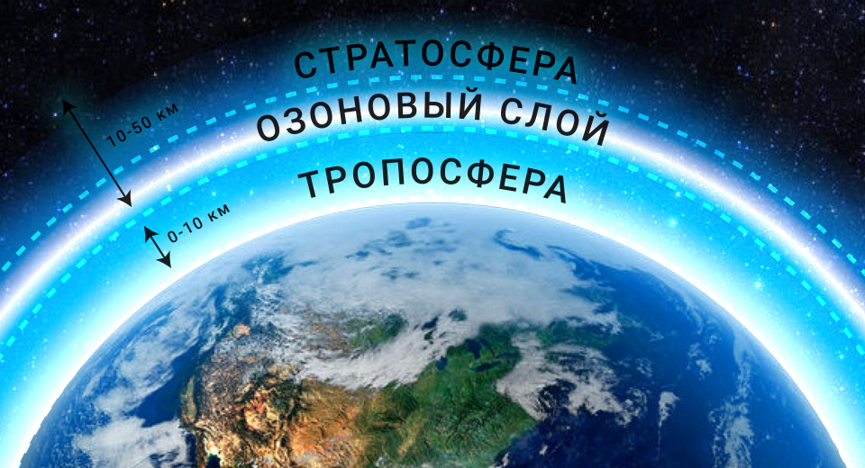

Озон представляет из себя голубоватый газ, который выполняет роль большого одеяла, защищающего землю от ультрафиолетового излучения нашего светилы. Он находится на высоте от 12 до 50 км от поверхности земли. Если весь озон из атмосферы собрать у поверхности Земли при нормальном давлении, получится слой толщиной всего около 2–3 мм. И вот такие малые количества озона в воздухе фактически обеспечивают жизнь на Земле.
Как образуется озон
В природе озон может образоваться несколькими способами. Первый– благодаря солнечной радиации. Второй – благодаря электрическим разрядам в атмосфере, то есть молниям. Третий – в электромагнитных полях силовых кабелей и других электрических устройств.

Области применения
- Дезинфекция и устранение загрязнений и неприятных запахов при стирке одежды.
- Обработка продуктов питания.
- Очищение воздуха в жилых помещениях, в ванных и туалетных комнатах.
- Дезинфекция питьевой воды, озонирование ванн, аквариумов.
- Косметологические процедуры, уход за ротовой полостью, кожей лица, рук и ног.
Интересный факт
Сейчас многие фирмы выпускают бытовые озонаторы для дезинфекции помещений, например для дома. Но почему-то они умалчивают о мерах безопасности. Если обеззараживать помещение, используя такой прибор, при этом находиться в помещении, такая чистка может кончиться летальным исходом. Хоть озон и опасен, его так же используют в медицине для специальных озонотерапий.